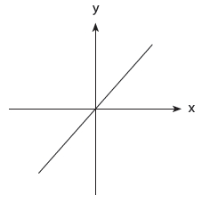
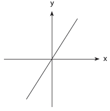
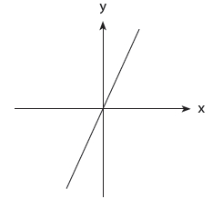
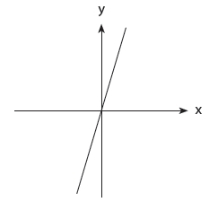

Çeltik Tarlaları ve
Matematik Testleri
“YILDA 360 GÜN YATAKTAN GÜNEŞ DOĞMADAN ÖNCE
KALKABİLEN HİÇ KİMSE AİLESİNİ ZENGİN
ETMEKTE BAŞARISIZ OLMAZ.”
1.
Güney Çin’de endüstrinin kalbine giden yol geniş, yeşilliklerle kaplı Pearl Nehri Deltası boyunca uzanır. Arazi yoğun sisle kaplıdır. Otobanlar traktör römorklarıyla doludur. Elektrik hatları manzarayla kesişen çizgiler oluşturur. Fotoğraf makinesi, bilgisayar, saat, şemsiye ve tişört üreten fabrikalar, iç içe geçmiş, kalabalık apartman bloklarıyla ve ihracat pazarı için muz, mango, şeker kamışı, papaya ve ananas yetiştirmeye ayrılmış alanlarla sıkı fıkıdır. Dünya üzerinde çok az manzara bu kadar kısa zamanda bu kadar çok değişmiş olsa gerek. Bir kuşak önce, gökyüzü berraktı ve otoyollar sadece çift şeritliydi. Onlardan bir kuşak önce ise sadece çeltik tarlalarını görebilirdiniz.
Pearl Nehri’nin kaynağına iki saat uzaklıkta Guangzhou kenti yer alır ve Guangzhou kentini geçtiğinizde eski Çin’in kalıntılarını kolayca bulabilirsiniz. Kırsal alan soluk kesici bir güzelliğe bürünür; Nan Ling Dağları’nın inişli çıkışlı tepeleri üzerinde kireçtaşı kayalar benekler oluşturur. Çinli köylülerin geleneksel haki renk kerpiç kulübeleri sağa sola yayılmıştır. Küçük kasabalarda açıkhava pazarları vardır: Özenle yapılmış bambu sepetlerde tavuklar ve kazlar, yere sıra sıra dizilmiş sebzeler, tezgahların üzerinde dilim dilim domuz etleri, büyük tabakalar halinde satılan tütün. Ve her yerde pirinç vardır, millerce ama millerce uzanır. Kış mevsiminde çeltik tarlaları kupkuru ve geçmiş yılın ürününden kalan anızlarla benek benektir. İlkbahar gelip de ekim yapıldıktan sonra, nemli rüzgârların esmeye başlamasıyla ekinler büyülü bir yeşile döner ve ilk hasat zamanına kadar pirinç filizlerinin uçlarında taneciklerin belirmesiyle arazi uçsuz bucaksız sarı bir denize dönüşür.
Çin’de pirinç binlerce yıldır yetiştiriliyor. Pirinç yetiştirme teknikleri Doğu Asya’ya –Japonya, Kore, Singapur ve Tayvan’a– Çin’den yayılmıştır. Asya’da çiftçilerin istisnasız her yıl hep o aynı amansız, karmaşık tarım modeliyle uğraşmaları tarih kadar eskidir.
Çeltik tarlaları, bir buğday tarlası gibi “açılmaz,” “inşa edilir.” Sadece ağaçları, çalıları ve taşları temizleyip ardından tarlayı sürmezsiniz. Çeltik tarlaları dağ yamaçlarına dizi dizi taraçalar (sekiler) halinde kazılır ya da bataklık arazilerde ve nehir havzalarında dikkatle, özenle inşa edilir. Sulanması gerektiği için çeltik tarlasının çevresinde karmaşık bir suyolu sisteminin de kurulması gerekir. Kanalları en yakın su kaynağından açmak ve su akışının tam gereken miktarda bitkiye ulaşması için suyollarına kapaklar yerleştirmek gerekir.
Bu arada çeltik tarlasının zemini de sert kilden olmalıdır; yoksa su zemin tarafından emilip gidecektir. Ancak, hiç kuşkusuz, pirinç fideleri sert kile ekilemeyeceği için, kilin üzerinde kalın, yumuşak bir çamur katmanı olmalıdır. Ve kil tabaka gerektiği gibi yavaş yavaş drenaj yapacak ve aynı zamanda bitkileri en uygun biçimde suya batıracak kadar iyi tasarlanmalıdır. Pirinçlerin tekrar tekrar gübrelenmesi gerekir; bu da ayrı bir sanattır. Çiftçiler, geleneksel olarak, karışık doğal gübre, nehir balçığı, fasulye ve kenevir kombinasyonu ve “dışkı” (insan dışkısı) kullanıyordu ve dikkatli olmaları gerekiyordu, çünkü çok fazla miktarda gübre kullanmak ya da doğru miktarda olsa da gübreyi yanlış zamanda uygulamak, çok az miktarda gübre kullanmak kadar zararlı olabiliyordu.
Ekim zamanı geldiğinde, Çinli bir çiftçinin aralarından seçim yapabileceği yüzlerce farklı çeşit oluyordu; bunlardan her biri biraz farklı bir vaatle sunuluyordu; ne kadar hızlı büyüdüğü, kuraklık zamanı ne kadar iyi sonuç verdiği ya da verimsiz toprakta bile ne kadar başarılı olduğu gibi. Çiftçi verimsizlik riskiyle başa çıkmak için mevsimden mevsime farklı bir karışım oluşturabilir, tek seferde bir düzine ya da daha fazla çeşit ekebilirdi.
Çiftçi (daha doğrusu, bütün aile; çünkü pirinç tarımı bir aile faaliyetidir) tohumları özel olarak hazırlanmış bir tohum yatağına ekerdi. Birkaç hafta sonra fideler, dikkatle 15’er santimetre aralık bırakılmış sıralar halinde tarlaya nakledilebilir ve sonra özenle bakılıp büyütülürdü.
Yabani otlar gayretle, pes etmeden elle temizlenmeliydi, çünkü fideler diğer bitkiler tarafından kolayca engellenebilirdi. Bazen bütün pirinç filizlerinin tek tek bambu bir tarakla temizlenmesi, böceklerden arındırılması gerekirdi. Bütün bu süre içinde çiftçilerin su düzeylerini tekrar tekrar kontrol etmesi ve suyun yaz güneşi altında fazla ısınmadığından emin olması gerekirdi. Ve pirinçler olgunlaştığında çiftçiler bütün arkadaşlarını ve akrabalarını bir araya getirir, ürünü işbirliği ve coşku içinde olabildiğince çabuk hasat ederlerdi ki kurak kış mevsimi başlamadan önce ikinci kez ürün alınabilsin.
Güney Çin’de kahvaltı, en azından parasal gücü yetenler için, haşlanmış pirinçti; marul, bir tür sazan balığı püresi ve bambu filizi eşliğinde beyaz pirinç lapası. Öğle yemeğinde biraz daha haşlanmış pirinç yenirdi. Akşam yemeği ise “garnitürlü” pirinçten oluşurdu. Pirinç yaşamın diğer gereksinimlerini satın alabilmek için pazarda sattığınız bir şeydi. Pirinç zenginlik ve statü ölçüsüydü. Günün hemen her çalışma anını o belirlerdi. “Pirinç hayattır” diyor Güney Çin’de geleneksel bir köyü incelemiş olan antropolog Gonçalo Santos. “Pirinç olmadan hayatta kalamazsınız. Çin’in bu bölgesinde yaşamak istiyorsanız pirinciniz olmalı. Dünya onun sayesinde döner.”
2.
Şu rakamlara bir göz atın: 4, 8, 5, 3, 9, 7, 6. Yüksek sesle okuyun. Şimdi rakamlara bakmayın, 20 saniye ezberleyin ve sonra yüksek sesle sayın.
Eğer İngilizce biliyorsanız, bu sırayı mükemmel biçimde anımsama şansınız yüzde 50. Ancak eğer Çinliyseniz bu sayıları her seferinde doğru tekrar edebileceğiniz neredeyse kesin. Neden mi? Çünkü biz insanlar rakamları yaklaşık iki saniyelik döngüler halinde belleğimize kaydediyoruz. En kolay, bu iki saniyelik sürede söyleyebildiğimiz ya da okuyabildiğimiz kadarını ezberleyebiliyoruz. Ve Çince konuşanlar bu rakamları –4, 8, 5, 3, 9, 7, 6– hemen her seferinde anımsayabiliyor, çünkü İngilizce’nin tersine onların dili bu yedi rakamın hepsini iki saniyeye sığdırmalarına izin veriyor.
Bu örnek Stanislas Dehaene’nin The Number Sense adlı kitabından. Dehaene’nin açıkladığı gibi:
Çince’de rakamları ifade eden sözcükler son derece kısa. Büyük bölümü bir saniyenin dörtte birinden daha kısa bir sürede telaffuz edilebiliyor (örneğin, 4 “si” ve 7 “qi”). İngilizce karşılıkları –“four,” “seven”– daha uzun; bunları telaffuz etmek bir saniyenin yaklaşık üçte birini alıyor. İngilizce ve Çince arasındaki bellek boşluğu belli ki bütünüyle bu uzunluk farkına bağlı. Keltçe, Arapça, Çince, İngilizce ve İbranice gibi birbirinden çok farklı dillerde rakamları telaffuz etmek için gerekli süreyle o dili konuşanların bellek süresi arasında benzer bir karşılıklı ilişki söz konusu. Bu alanda ödülü Çince’nin Kanton lehçesi alıyor; bu lehçe, kısalığıyla, Hong Kong sakinlerine 10 rakamı anımsayabildikleri yıldırım gibi bir bellek sağlıyor.
Rakamları adlandırma sistemlerinin oluşturulmasında Batılı dillerle Asya dilleri arasında büyük bir fark olduğu anlaşılıyor. İngilizce’de fourteen (14), sixteen (16), seventeen (17), eighteen (18) ve nineteen (19) dediğimiz için oneteen, twoteen, threeteen ve fiveteen dememiz de beklenebilirdi. Ancak öyle demiyoruz. Farklı bir form kullanıyoruz: Eleven (11), twelve (12), thirteen (13) ve fifteen (15). Aynı biçimde, ilişkili oldukları sözcüklerle [four (4) ve six (6)] benzer sesleri içeren forty (40) ve sixty (60) var. Ancak aynı zamanda fifty (50), thirty (30) ve twenty (20) diyoruz ki bunlar ses olarak five (5), three (3) ve two (2) ile bir tür benzerlik gösterse de gerçekte tam olarak benzer değil. Ayrıca 20’nin üzerindeki sayılar için, önce onlar hanesini, sonra birler hanesini koyuyoruz [twenty-one (21), twenty-two (22)]; oysa onlu sayılarda tam tersini yapıyoruz [fourteen (14), seventeen (17), eighteen (16)]. İngilizce’de sayı sistemi son derece düzensiz. Çince’de, Japonca’da ve Kore dilinde öyle değil. Mantıksal bir sayma sistemleri var. On-bir. On-iki. İki-on-dört (24) gibi. Böyle sürüp gidiyor.
Bu fark Asyalı çocukların saymayı Amerikalı çocuklardan çok daha hızlı öğrenmeleri anlamına geliyor. Dört yaşındaki Çinli bir çocuk ortalama 40’a kadar sayabiliyor. Aynı yaştaki Amerikalı çocuklar ancak 15’e kadar sayabiliyor ve büyük bölümü beş yaşına gelene dek 40’a kadar sayamıyor. Bir diğer deyişle, Amerikalı çocuklar beş yaşına kadar en temel matematik becerilerinde Asyalı akranlarından çoktan bir yıl geride oluyor.
Sayı sistemlerinin düzenli olması, aynı zamanda, Asyalı çocukların toplama gibi temel işlemleri de çok daha kolay yapmaları anlamına geliyor. İngilizce konuşan yedi yaşındaki bir çocuğa kafasında otuz yedi ile yirmi ikiyi toplamasını söylediğinizde, sözcükleri sayılara çevirmesi gerekecektir (37 + 22). Ancak o zaman işlemi yapabilir: 2 artı 7 eşittir 9 ve 30 artı 20 eşittir 50 ve sonuç 59. Asyalı bir çocuğa üç-on-yedi ile iki-on-ikiyi toplamasını söylediğinizde ise denklem hemen oracıktadır, cümlenin içinde saklıdır. Rakamlara çevirmek gerekmez: Sonuç beş-on-dokuz.
“Asya sistemi şeffaf” diyor Northwestern University’den psikolog Karen Fuson; kendisi Asyalılarla Batılılar arasındaki farkları yakından incelemiş. “Bunun matematiğe yönelik tavrı bütünüyle farklı kıldığını düşünüyorum. Ezbere öğrenmek yerine, çıkarabildiğim bir kalıp söz konusu. Bunu yapabilirim beklentisi var. Akla uygun olduğuna ilişkin bir beklenti var. Biz kesirler için beşte üç (three-fifths) diyoruz. Çincesi ise kelimesi kelimesine ‘beş parçadan üçünü çıkar.’ Bu size kesirin ne olduğunu kavramsal olarak anlatıyor. Pay ile paydayı ayrıştırıyor.”
Batılı çocuklarda şu çok anlatılan matematiğin büyüsünü kaybetmesi hikayesi üçüncü ve dördüncü sınıfta başlıyor ve Fuson bunun bir kısmının belki de matematiğin bir anlam ifade etmemesine, dilbilimsel yapısının biçimsiz olmasına, temel kurallarının keyfi ve karmaşık görünmesine bağlı olduğunu ileri sürüyor.
Asyalı çocuklar ise, tam tersi, bu zihin karışıklığını neredeyse hissetmiyor. Kafalarında daha çok sayıyı tutabiliyor, daha hızlı toplama yapabiliyor. Onların dillerinde kesirlerin ifadesi kesir gerçekte neyse ona uyuyor; belki bu onların matematikten biraz daha fazla hoşlanmalarını sağlıyor ve belki de matematikten biraz daha fazla hoşlandıkları içindir ki zincirleme olarak, biraz daha çok çalışıyor, daha fazla matematik dersi alıyor, ev ödevlerini yapmaya daha istekli oluyorlar, vesaire, vesaire.
Bir diğer deyişle, matematik söz konusu olduğunda Asyalılar en başından bir avantaja sahip. Ancak bu sıradışı bir avantaj. Çinli, Güney Koreli ve Japon öğrenciler –ve bu ülkelerden yeni gelmiş olan göçmenlerin çocukları– matematikte Batılı akranlarını yıllarca önemli ölçüde geride bıraktı ve tipik varsayım bu durumun Asyalıların matematiğe bir tür doğuştan yatkınlık göstermeleriyle ilişkili olabileceğiydi.[*] Psikolog Richard Lynn ise Asyalıların neden daha yüksek IQ’larının olduğunu açıklamak için Himalayalar, çok soğuk hava, premodern avcılık faaliyetleri, beyin büyüklüğü ve özel ünlü sesler ile ilişkili ayrıntılı bir evrim kuramı önerecek kadar ileri gitti.[*] İşte matematik hakkında böyle düşünüyoruz. Kalkülüs ve cebir gibi şeylerde başarılı olmanın, o kişinin zekasının basit bir işlevi olduğunu varsayıyoruz. Oysa Doğu’nun ve Batı’nın sayı sistemleri arasındaki farklılıklar çok farklı bir şey ortaya koyuyor; matematikte başarılı olmanın temeli bir grubun kültürü de olabilir.
Korelilerin çok köklü bir mirası, uçak kullanmak gibi çok modern bir görevin önünde engel oluşturmuştu. Burada bir diğer miras söz konusu; yirmi birinci yüzyıla özgü görevlere mükemmel biçimde uyduğu anlaşılan bir miras. Kültürel miraslar önemlidir ve güç mesafesi ya da saniyenin üçte biri içinde söylenebilen rakamlara karşılık saniyenin dörtte biri içinde söylenebilen rakamlar gibi şeylerin şaşırtıcı etkilerini gördükten sonra, diğer kültürel miraslardan kaçının yirmi birinci yüzyıla özgü entelektüel görevlerimiz üzerinde etkili olduğunu kolayca merak edebiliyoruz. Pirinç yetiştirmenin gereklilikleriyle biçimlenmiş bir kültürden gelmek ya sizi matematikte de daha başarılı kılıyorsa? Çeltik tarlası sınıfta da bir fark yaratabilir mi?
3.
Bir çeltik tarlasına ilişkin en çarpıcı gerçek –gidip bir çeltik tarlasının ortasında dikilmedikçe asla tam olarak anlayamayacağınız gerçek– onun büyüklüğüdür. Çeltik tarlası küçücüktür. Tipik bir çeltik tarlasının büyüklüğü bir otel odası büyüklüğündedir. Asya’da tipik bir pirinç çiftliği ise iki, üç çeltik tarlası büyüklüğündedir. Çin’de 1.500 kişilik bir köy 182 hektar toprakla tam olarak geçinebilir ki Amerika’nın orta batısında tipik bir aile çiftliği bu büyüklüktedir. Beş altı kişilik ailelerin geçimlerini iki otel odası büyüklüğündeki çiftliklerden sağladıkları bir ölçekte, tarım çarpıcı biçimde değişiklik gösteriyor.
Tarihsel olarak, Batı’da tarım “mekanik” biçimde yönlendirilir. Batı’da bir çiftçi verimini artırmak ya da daha çok ürün almak istediğinde hep daha gelişmiş ekipmana yönelmiştir ki bu da onun insan emeğinin yerine mekanik emeği getirmesine olanak tanımıştır: Harman dövme makinesi, saman balyalama makinesi, biçerdöver, traktör. Sonra bir tarla daha açmış ve dönümünü artırmıştır, çünkü artık sahip olduğu makineler onun aynı miktarda emekle daha fazla toprağı işlemesine olanak tanımıştır. Ancak Japonya’da ve Çin’de çiftçilerin ekipman satın alacak parası yoktu ve birçok durumda, kolaylıkla yeni tarlalara dönüştürülebilecek fazladan toprak da kesinlikle yoktu. Bu nedenle pirinç üreticileri ürünlerini daha akıllıca davranarak, zamanlarını daha iyi yöneterek ve daha iyi tercihler yaparak artırdılar. Antropolog Francesca Bray’in dile getirdiği gibi, pirinç tarımı “beceri odaklı”dır; yabani otları biraz daha gayretle temizlemeye, gübrelemede ustalık kazanmaya, su seviyelerini kontrol etmek için biraz daha fazla zaman harcamaya, kil tabakanın konumunu korumaya ve çeltik tarlanızın her bir santimetrekaresinden yararlanmaya hazırsanız, daha fazla ürün hasat edeceksinizdir. Tarih boyunca, pirinç yetiştiren insanların her zaman neredeyse diğer her tür çiftçiden daha fazla çalışmış olmalarına şaşırmamak gerek.
Şu son cümle size biraz garip gelebilir, çünkü çoğumuz premodern dünyada herkesin gerçekten çok çalışmış olduğu gibi bir duyguya sahibiz. Ancak bu kesinlikle doğru değildir. Örneğin, bizler hepimiz bir yerde avcı-toplayıcılar soyundan geliyoruz ve söylenenlere göre avcı-toplayıcıların birçoğu son derece rahat, telaşsız bir yaşama sahipti. Botsvana’da, Kalahari Çölü’nde yaşayan ve bu yaşam biçiminin kalan son örneği (ve ‘buşmen’lerden olan) !Kung kabilesi zengin meyve, kök ve kuruyemiş çeşitleriyle besleniyor; özellikle mongongo fıstığı bol miktarda bulunan, son derece besleyici ve proteinden yana zengin bir besin kaynağı. Bu insanlar hiçbir şey yetiştirmiyor; oysa bir şeyler yetiştirmek insanın zamanını alan bir iştir; hazırlık, ekim, yabani otların temizlenmesi, hasat, depolama. Hayvan da yetiştirmiyorlar. Erkek !Kung ara sıra avlanıyor, ancak daha çok spor olsun diye. Her şey hesaba katılırsa, !Kung kadınları ve erkekleri haftada yaklaşık 12 ila 19 saatten fazla çalışmıyor; geri kalan zamanlarını dans ederek, eğlenerek, ailelerini ve arkadaşlarını ziyaret ederek geçiriyorlar. Bu da yılda en fazla bin saat çalışmaları anlamına geliyor. (Bir keresinde bir ‘buşmen’e halkının neden tarım yapmadığı sorulduğunda, şaşırmış ve şu yanıtı vermişti: “dünyada bu kadar çok mongongo fıstığı varken neden bir şeyler ekelim ki?”)
Ya da on sekizinci yüzyıl Avrupa’sında bir köylünün yaşamını düşünün. O zamanlar kadınlar ve erkekler büyük olasılıkla yılda 200 gün gündoğumundan öğlene kadar çalışıyordu ki bu da yılda yaklaşık 1.200 saate denk düşüyor. Hasat zamanı ya da ilkbaharda ekim döneminde çalışma saatleri daha uzun olabilir. Kışın ise çok daha kısa. Tarihçi Graham Robb The Discovery of France adlı kitabında Fransa gibi bir ülkede köy yaşamının, on dokuzuncu yüzyılda bile, kısa iş dönemlerini izleyen uzun tembellik dönemleriyle geçtiğini ileri sürüyor.
“Burada ve [Fransız köy yaşamına ilişkin] diğer anlatımlarda tanımlanan tüm insan faaliyetlerinin yüzde 99’u” diyor Robb, “ilkbahar sonlarıyla sonbahar başları arasında gerçekleşirdi.” Pireneler’de ve Alpler’de bütün köyler Kasım’da ilk karla birlikte Mart’a, Nisan’a kadar zorunlu olarak kış uykusuna yatardı. Fransa’nın kışın sıcaklığın nadiren donma seviyesinin altına indiği daha ılıman bölgelerinde de aynı model geçerliydi. Robb şöyle devam ediyor:
Flanders arazileri yılın büyük bölümünde terk edilmiş olurdu. 1844’te Nièvre üzerine hazırlanmış resmi bir raporda Burgonyalı gündelik işçilerin hasat zamanı geldikten ve asma ağaçları yakıldıktan sonra geçirdikleri garip değişim tanımlanıyor: “Bu güçlü kuvvetli adamlar kullanmış oldukları araçlarda gereken onarımları yaptıktan sonra artık günlerini yatakta geçirir, üşümemek ve daha az yiyip içmek için bedenlerini sarıp sarmalar. Bile bile kendi kendini zayıf düşürür.”
İnsanların kış uykusuna yatması fiziksel ve ekonomik bir zorunluluktu. Metabolizma hızını düşürmek, açlıktan kaynakların tüketilmesini engellerdi… İnsanlar yazın bile zar zor yürür ve işleri ağırdan alırdı… Devrimden sonra, Alsace ve Pas-de-Calais’de yetkililer üzüm yetiştiricilerinin ve bağımsız çiftçilerin ölü sezonda “huzurlu ve yerleşik bir sektörde” çalışmak yerine “kendilerini tembelliğe bırakmalarından” yakınıyordu.
Tam tersi, Güney Çin’de bir çiftçi olmanız durumunda, kışın uyumazdınız. Kasım’dan Şubat’a kadar, kurak mevsimle kendini gösteren kısa molada, yan işlerle meşgul olurdunuz. Bambu sepetler ya da şapkalar üretip pazarda satardınız. Çeltik tarlanızdaki suyollarını onarır, kerpiç kulübenizi yeniden inşa ederdiniz. Oğullarınızdan birini çalışması için yakınlardaki bir köye bir akrabanızın yanına gönderirdiniz. Tofu ve kuru fasulye çökeleği yapar, yılan yakalar (yılan az bulunan ve pahalı bir yiyecekti) ve böcek avlardınız. Lahp cheun (“ilkbaharın gelişi”) zamanı, tekrar gündoğumunda tarlalara gitmeye başlardınız. Pirinç tarlasında çalışmak aynı büyüklükteki bir mısır ya da buğday tarlasında çalışmaktan 10 ila 20 kat daha fazla emek gerektirir. Kimi tahminlere göre, Asya’da sulu pirinç tarımı yapan bir çiftçinin iş yükü yılda üç bin saattir.
4.
Bir an için Pearl Nehri Deltası’ndaki bir pirinç üreticisinin yaşamının neye benzeyebileceğini düşünün. Yılda üç bin saat, çalışarak geçirmek için inanılmaz bir süre; özellikle de bu saatlerin pek çoğu sıcak güneş altında eğilip çeltik tarlasında ekim yapmayı ve yabani otları temizlemeyi gerektiriyorsa.
Bununla birlikte, pirinç yetiştiren bir çiftçinin yaşamını kurtaran şey yaptığı işin doğasıydı. New York’ta göçmen Musevilerin yaptığı giysi işine çok benziyordu. Anlamlıydı. Her şeyden önce, pirinç üretiminde çaba ile ödül arasında belirgin bir ilişki vardır. Pirinç tarlasında ne kadar çok çalışırsanız, o kadar çok ürün alırsınız. İkincisi, karmaşık bir iştir. Pirinç üreticisi ilkbaharda ekim, sonbaharda ise hasat yapmakla kalmaz. Bir küçük işletmeyi etkin bir biçimde yönetmek durumundadır; ailedeki işgücünü yönlendirir, tohum seçerek belirsizlikleri ortadan kaldırır, gelişmiş bir sulama sistemi kurup bu sistemi yönetir ve ilk ürünü hasat ederken aynı zamanda ikinci ürüne hazırlık yapmak gibi karmaşık bir süreci koordine eder.
En önemlisiyse, bu iş otonomi içerir. Avrupalı köylüler zorunlu olarak aristokrat toprak sahiplerinin düşük ücretli köleleri olarak çalıştı, kendi yazgıları üzerinde çok az kontrole sahipti. Oysa Çin ve Japonya hiçbir zaman bu tür baskıcı bir feodal sistem geliştirmedi, çünkü bir pirinç ekonomisinde feodalizm kesinlikle işlemez. Pirinç yetiştirmek, çiftçilerin her sabah tarlalara gitmeye itildiği ve zorlandığı bir sistem için fazla karmaşık ve inceliklidir. On dördüncü ve on beşinci yüzyılda orta ve Güney Çin’deki toprak sahipleri kiracılarıyla olan ilişkilerinde onlara neredeyse hiç karışmazdı, belli bir kira bedeli alır ve çiftçileri kendi işleriyle baş başa bırakırdı.
“Sulu pirinç tarımında, işin püf noktası, sadece alışılmışın ötesinde emek gerektirmesi değil, aynı zamanda her şeyin harfi harfine yapılmak zorunda olması” diyor tarihçi Kenneth Pomerantz. “Özen göstermeniz gerekir. Suyla doldurmadan önce tarlayı mükemmel biçimde düzeltip her yerini aynı seviyeye getirmeniz gerçekten önemlidir. Düze yakın hale gelse de dümdüz olmaması alacağınız ürün açısından büyük bir fark yaratır. Suyun tarlada kaldığı sürenin tam gerektiği kadar olması gerçekten önemlidir. Fideleri tam doğru aralıklarla yerleştirmekle öylesine yerleştirmek arasında büyük bir fark vardır. Mart ortalarında mısırları toprağa ektiğinizde, ay sonunda yağmur yağması koşuluyla, hiçbir sorun yaşamamanıza benzemez. Pirinç yetiştirirken bütün girdileri çok direkt olarak kontrol edersiniz. Ve bu kadar özen gerektiren bir şey söz konusu olduğunda, derebeyinin gerçek emekçiye bir dizi teşvik sağladığı bir sistem olması gerekir; hasat iyi olduğunda çiftçi daha büyük bir pay almalıdır. İşte bu nedenle kira miktarı sabittir; toprak sahibinin, hasat ne kadar olursa olsun, ben 20 kile alırım ve sonuç gerçekten çok iyi olursa fazlası sana kalır, demesi söz konusudur. Bu kölelikle ya da ücretli işçilikle yürümeyen bir üründür. Sulama kanallarını kontrol eden kapağı birkaç saniye fazla açık tutmak çok kolaydır ve tarlanız mahvolur.”
Tarihçi David Arkush Rusların köylü atasözleriyle Çinlilerin köylü atasözlerini karşılaştırmıştır ve farklılıklar çok çarpıcıdır. Tipik bir Rus atasözü “Tanrı getirmezse, toprak vermez” der. Burada köylülerin kendi çabalarının yeterli olacağına inanmak için hiçbir nedenlerinin olmadığı, baskıcı feodal sisteme özgü tipik kadercilik ve karamsarlık söz konusudur. Diğer yanda, Arkash, Çin atasözlerinin “çalışkanlığın, zekice planlamanın, özgüvenin ve küçük bir grupla işbirliği yapmanın zaman içinde karşılığını getireceği” inancıyla dikkat çektiğini yazıyor.
İşte beş parasız Çinli köylülerin çeltik tarlalarının kavuran sıcaklığı ve rutubetinde yılda üç bin saat çalışırken birbirlerine söyledikleri birkaç şey (bu arada, bu tarlalar sülüklerle doludur):
“Kan ter olmadan yemek olmaz.”
“Çiftçiler meşgul; çiftçiler meşgul; çiftçiler meşgul olmasaydı kışı geçirecek tahıl nereden gelirdi?”
“Tembel adam kışın donarak ölür.”
“Yiyecek için Tanrı’ya değil, yükü taşıyan iki eline güven.”
“Ürün istemenin yararı yok, her şey çok çalışmaya ve gübreye bağlı.”
“Eğer bir adam çok çalışırsa, toprak da tembellik etmeyecektir.”
Ve hepsinden daha çok şey anlatan şu söz: “Yılda 360 gün yataktan güneş doğmadan önce kalkabilen hiç kimse ailesini zengin etmekte başarısız olmaz.” Güneş doğmadan önce kalkmak? Yılda 360 gün? !Kung rahat rahat, telaşsızca mongongo toplarken, Fransız köylü kışı uyuyarak geçirirken ya da pirinç yetiştiriciliği dünyası dışındaki herhangi biri bir başka şey yaparken, bu atasözü akıllarına bile gelmez.
Hiç kuşkusuz, bu Asya kültürüne ilişkin alışılmadık bir gözlem değil. Batı’da hangi üniversite kampüsüne giderseniz gidin, Asyalı öğrenciler, diğer herkes çıktıktan uzun saatler sonra bile kütüphanede kalmakla ünlüdür. Asya kökenli insanlar, kültürleri böyle tanımlandığında bazen alınırlar, çünkü bu stereotipin bir tür küçümseme olarak kullanıldığını düşünürler. Oysa çalışma inancı güzel bir şey olsa gerek. Bu kitapta şu ana kadar gördüğümüz hemen her başarı hikayesi, emsallerinden ya da akranlarından daha çok çalışan bir kişi ya da grupla ilgili. Bill Gates küçükken bilgisayar bağımlısıydı. Bill Joy da öyle. Beatles Hamburg’da binlerce saat pratik yaptı. Joe Flom, eline bir şans geçene kadar, yıllarca canını dişine takarak çalıştı, şirketleri ele geçirme sanatını mükemmel hale getirdi. Başarılı insanların yaptığı şey gerçekten çok çalışmaktır ve çeltik tarlalarında yaratılan kültürün tipik özelliği, çok çalışmanın bu tarlalarda çalışan insanlara, büyük bir belirsizlik ve yoksulluğun ortasında anlam bulmanın bir yolunu sağlamış olmasıdır. Bu ders Asyalılara birçok çabalarında yarar sağlamıştır, ancak sağlanan yarar nadiren matematikteki kadar mükemmel olmuştur.
5.
Berkeley’de matematik profesörü olan Alan Schoenfeld, birkaç yıl önce, Renee adlı bir kadını bir matematik problemini çözmeye çalışırken videoya kaydetti. Renee 20’li yaşların ortalarındaydı; uzun siyah saçları ve yuvarlak gümüş bir gözlüğü vardı. Videoda kadın cebir öğretmek için tasarlanmış bir yazılım programıyla oynuyor. Ekranda y ekseni ile x ekseni var. Program kullanıcıdan bir dizi koordinat belirlemesini istiyor ve sonra ekranda bu koordinatlardan bir doğru çiziyor. Örneğin, kadın y ekseni için 5 ve x ekseni için de 5 sayısını belirlediğinde bilgisayar şunu yapıyor:

Bu noktada, eminim, ortaokul cebirinden belli belirsiz bir şeyler aklınıza geliyordur. Ancak, inanın, Renee örneğinin önemini anlamak için bunların hiçbirini anımsamanız gerekmiyor. Hatta gelecek birkaç paragrafta Renee’ye kulak verirken onun ne söylediğine değil, daha çok nasıl konuştuğuna ve neden böyle konuştuğuna odaklanın.
Schoenfeld’in yarattığı bilgisayar programının amacı öğrencilere bir doğrunun eğimini hesaplamayı öğretmekti. Eğim, eminim anımsadığınız gibi (daha doğrusu, anımsamadığınıza bahse girerim, ben kesinlikle anımsamadım), dikey mesafe bölü yatay mesafedir. Örneğimizdeki doğrunun eğimi 1’dir, çünkü dikey mesafemiz 5, yatay mesafemiz 5’tir.
Ve işte Renee. Klavye başında oturuyor ve bilgisayara y ekseniyle üst üste binen dimdik bir doğru çizdirmek için hangi değerleri girmesi gerektiğini bulmaya çalışıyor. Şimdi, içinizden lise matematiğini anımsayanlar, bunun gerçekte olanaksız olduğunu biliyordur. Dik bir doğru tanımsız bir eğime sahiptir. Dikey mesafesi sonsuzdur: y ekseni üzerinde sıfırdan sonsuza kadar herhangi bir sayıdır. Bu arada x eksenindeki yatay mesafe sıfırdır. Sonsuz sıfıra bölündüğünde bir sayı elde edilmez.
Ancak Renee yapmaya çalıştığı şeyin yapılamaz olduğunu fark etmiyor. O daha çok, Schoenfeld’in “görkemli yanlış yorum” olarak adlandırdığı şeyin pençesinde ve Schoenfeld’in bu özel kaydı göstermekten hoşlanmasının nedeni, bu kaydın söz konusu yanlış yorumun nasıl çözüldüğüne ilişkin mükemmel bir kanıt oluşturuyor olması.
Renee bir hemşireydi. Geçmişte matematiğe özellikle ilgi duyan biri değildi. Ancak her nasılsa bu yazılım eline geçmiş ve ona kapılmıştı.
“Şimdi, benim bu formülle yapmak istediğim, y eksenine paralel bir doğru çizmek” diye giriyor söze Renee. Yanında Schoenfeld oturuyor. Renee ona heyecanla dönüp bakıyor. “Beş yıldır bunlarla hiç ilgim olmadı.”
Programı kurcalamaya başlayıp, farklı sayılar giriyor.
“Şimdi eğer eğimi bu yönde değiştirirsem… eksi 1… şimdi benim yapmak istediğim doğrunun dimdik olması.”
Sayıları girdiğinde, ekrandaki doğru değişiyor.
“Hay Allah. Olmayacak.”
Şaşırmış görünüyor.
“Ne yapmaya çalışıyorsun?” diye soruyor Schoenfeld.
“Yapmaya çalıştığım şey, y eksenine paralel bir doğru çizmek. Burada ne yapmam gerekiyor? Sanırım yapmam gereken bunu bir parça değiştirmek.” y eksenine verilen değerin girildiği yere işaret ediyor. “Bir şey keşfettim. 1 yerine 2 girdiğinizde oldukça büyük bir değişiklik oluyor. Ancak şimdi eğer şuraya gideceksiniz değiştirmeye devam etmeniz gerekiyor.”
Bu Renee’nin görkemli yanlış yorumu. y ekseni koordinatını ne kadar yükseltirse doğrunun o kadar dikleştiğini fark etti. Bu nedenle, dik bir doğru çizmenin anahtarının, sadece y ekseni koordinatının yeterince büyütülmesi olduğunu düşünüyor.
“Sanırım 12, hatta 13 yeterli olabilir. Hatta belki de 15.”
Kaşlarını çatıyor. Renee ve Schoenfeld değerleri yükseltip indiriyorlar. Renee, Schoenfeld’e sorular soruyor. Schoenfeld onu nazikçe doğru yöne itmeye çalışıyor. Renee çabalamayı sürdürüyor, değerleri ardı ardına deniyor.
Bir noktaya geldiğinde Renee 20 yazıyor. Doğru bir parça dikleşiyor.

40 yazıyor. Doğru daha da dikleşiyor.

“Burada bir ilişki olduğunu görüyorum. Ancak bu ilişkinin nedenine gelince, benim için hiçbir anlam ifade etmiyor gibi… Peki ya bu değeri 80 yaparsam? Eğer 40 beni yolun yarısına kadar götürüyorsa, 80 tam olarak y eksenine ulaştırmalı. O halde ne oluyor, bir bakalım.”
80 yazıyor. Doğru daha da dikleşiyor. Ancak hâlâ dimdik değil.
“Ah. Sonsuz, öyle değil mi? Asla oraya ulaşmayacak.” Renee yaklaştı. Ancak yine başlangıçtaki yanlış yorumuna geri dönüyor.
“O halde şimdi bana ne gerekiyor? 100 mü? Değeri ne zaman iki katına çıkarsanız, y eksenine yarı yarıya yaklaşıyorsunuz. Ancak asla tam olarak oraya ulaşmıyor…”
100 yazıyor.

“Daha yakın. Ancak hâlâ orada değil.”
Yüksek sesle düşünmeye başlıyor. Bir şeyleri anlamanın eşiğinde olduğu ortada. “Şey, ben bunu biliyordum, ama... işte... bunu biliyordum. Her bir artışta bu kadar dikleşiyor. Bunun nedeni konusunda kafam hâlâ karışık…”
Susar, gözlerini kısarak ekrana bakar.
“Kafam karışıyor. Bir, yolun onda biri. Ancak benim istediğim bu değil…”
Ve sonra anlıyor.
“Ah! Herhangi bir sayı ve sıfıra bölünecek. Sıfıra bölünen herhangi bir sayı!” Yüzü aydınlanıyor. “Dik bir doğru sıfıra bölünen herhangi bir şeydir ve bu tanımsız bir sayıdır. Oh! Tamam. Şimdi anladım. Dik bir doğrunun eğimi tanımsızdır. Ohhh. Şimdi bu bir anlam ifade ediyor. Bunu hiç unutmayacağım!”
6.
Schoenfeld, kariyeri boyunca, matematik problemi çözmeye çalışan sayısız öğrenciyi videoya kaydetti. Ancak Renee’ninki en sevdiği kayıtlardan biri, çünkü matematik öğrenmenin sırrı olarak kabul ettiği şeye çok güzel örneklik ediyor. Renee’nin bilgisayar programıyla oynamaya başladığı andan “Ohhh. Şimdi bu bir anlam ifade ediyor” dediği ana kadar 22 dakika geçiyor. Bu uzun bir süre. “Bu sekizinci sınıf matematiği” diyor Schoenfeld. “Eğer Renee’nin yerinde sıradan bir sekizinci sınıf öğrencisi olsaydı, sanırım ilk birkaç denemeden sonra ‘Bunu anlamadım. Bana açıklamanız gerekiyor’ derdi. Schoenfeld bir keresinde bir grup lise öğrencisine bir ev ödevi sorusunun asla çözemeyecekleri kadar zor olduğunu anlamalarının ne kadar zaman alacağını sordu. Yanıtlar 30 saniye ile beş dakika arasındaydı ve ortalama iki dakikaydı.
Oysa Renee inat ediyor. Deniyor. Aynı şeye tekrar tekrar geri dönüyor. Yüksek sesle düşünüyor. Çabalamayı sürdürüyor. Kesinlikle pes etmeyecek. Dik bir doğrunun nasıl çizildiğine ilişkin kuramında yanlış bir şeyler olduğunun belli belirsiz farkında ve doğruyu bulduğundan kesinlikle emin olana kadar pes etmeyecek.
Renee bir matematik insanı değildi. “Eğim” ya da “tanımsız” gibi soyut kavramlara yakın değildi. Yine de Schoenfeld onu ancak bu kadar etkileyici bulabilirdi.
“Onun yaptığına yön veren şey, anlam arayışındaki kararlılık” diyor Schoenfeld. Yüzeysel bir ‘Evet, haklısın’ı kabul ederek yürüyüp gitmeyecekti. O böyle biri değil. Ve bu gerçekten alışılmadık.” Schoenfeld kaydı geri sardı ve Renee’nin ekranda gördüğü bir şeye büyük şaşkınlıkla tepki verdiği bir ana işaret etti.
“Bakın” dedi. “Anlayıp birden irkiliyor. Birçok öğrenci peşini bırakırdı. O ise ‘Bu benim düşündüğüm şeyle uyuşmuyor. Yapamıyorum. Bu önemli. Ben bir açıklama istiyorum’ düşüncesindeydi. Ve sonunda açıklamayı bulduğunda ‘Evet, bu uyuyor’ dedi.”
Schoenfeld, Berkeley’de problem çözme üzerine bir ders veriyor. Dersin bütün amacının öğrencileri üniversiteye gelene kadar kapmış oldukları matematik alışkanlıklarından kurtarmak olduğunu söylüyor. “Nasıl çözeceklerini bilmedikleri bir problem seçiyorum” diyor. “Öğrencilerime ‘İki hafta süresi olan bir ev ödevi veriyorum. Alışkanlıklarınızı biliyorum. İlk hafta hiçbir şey yapmayacak, ödeve gelecek hafta başlayacaksınız ve şimdiden sizi uyarmak istiyorum: Eğer bu probleme sadece bir hafta ayırırsanız, çözemeyeceksiniz. Diğer yanda, eğer size ödevi verdiğim gün başlarsanız, düşkırıklığına uğrayacaksınız. Bana gelip ‘Çözmem olanaksız’ diyeceksiniz. Ben de size, çalışmaya devam et, ikinci haftaya girdiğinde önemli bir gelişme kaydettiğini göreceksin’ diyeceğim.”
Bazen matematikte başarılı olmayı doğuştan sahip olunan bir yetenek olarak düşünüyoruz. Bu yeteneğe ya sahipsinizdir ya da değil. Oysa Schoenfeld’e göre, yetenekten çok, tavır niteliğinde. Çabalamaya istekliyseniz matematikte ustalık kazanıyorsunuz. İşte Schoenfeld’in öğrencilerine öğretmeye çalıştığı da bu. Başarı, çoğu insanın 30 saniyede vazgeçebildiği bir şeyi anlamak için 22 dakika uğraşacak kadar inatçı, azimli ve istekli olmanın bir işlevi. Bir grup Renee’yi bir sınıfa yerleştirip onlara matematiği kendi kendilerine keşfedebilecekleri zamanı ve mekanı sunduğunuzda bu konuda çok yol alabilirsiniz. Ya da Renee’nin azminin bir istisna değil, Cumberland Platosu’ndaki onur kültürü kadar köklü bir kültürel özellik olduğu bir ülke hayal edin. Şimdi bu ülke matematikte başarılı bir ülke olurdu.
7.
Uluslararası bir eğitimci grubu dört yılda bir tüm dünyadan ilkokul ve ortaokul öğrencilerine kapsamlı bir matematik ve fen sınavı uyguluyor: TIMSS sınavı (yaş sınırı tarihinin başlangıcına yakın doğan dördüncü sınıf öğrencileriyle bitimine yakın doğan dördüncü sınıf öğrencileri arasındaki farkın irdelendiği bölümde de adı geçmişti). TIMSS sınavının amacı ülkelerin eğitim alanındaki başarılarını karşılaştırmak.
Öğrenciler bu sınavın başına oturduklarında, bir de anket doldurmak zorundalar. Onlara her tür şey soruluyor; anne babalarının eğitim düzeyi, matematiğe ilişkin görüşleri, arkadaşlarının özellikleri gibi. Bu önemsiz bir alıştırma değil. Yaklaşık 120 soru uzunluğunda. Hatta birçok öğrencinin 10 ya da 20 soruyu boş bırakmasına yol açacak kadar uzun ve yorucu; dikkat ve çaba gerektiriyor.
Şimdi işte işin ilginç yanı. Anlaşılan o ki bu ankette yanıtlanan ortalama soru sayısı ülkeden ülkeye değişiyor. Hatta ülkeleri öğrencilerin ankette yanıtlamış oldukları soru sayısına göre sıralamak olası. Şimdi, bu sıralamayı TIMSS’deki matematik sıralamasıyla karşılaştırırsak sizce ne olur? İkisi kesinlikle aynı. Bir diğer deyişle, öğrencileri oturup bitmek tükenmek bilmez bir anketteki her bir soruyu yanıtlamaya odaklanmakta istekli olan ülkeler, öğrencileri matematik problemlerini çözmekte en usta olan ülkelerle aynı.
Bu gerçeği keşfeden kişi Pennsylvania Üniversitesi’nden Erling Boe adlı bir eğitim araştırmacısı ve bu gerçekle tesadüfen karşılaşmış. “Hiç yoktan ortaya çıktı” diyor. Boe’nin bulguları bilimsel bir yayında bile yer almadı, çünkü söylediğine göre, bu bulgular biraz tuhaf. Unutmayın, anketi tamamlama becerisiyle matematik testinde başarılı olma becerisinin ilişkili olduğunu söylemiyor. Aynı olduğunu söylüyor: İki sıralamayı karşılaştırdığınızda birbirinden farksız.
Bir de şöyle düşünün. Her yıl dünyanın müthiş bir kentinde Matematik Olimpiyatları düzenlendiğini hayal edin. Her ülke sekizinci sınıf öğrencilerinden oluşan biner kişilik kendi takımını gönderiyor. Boe’nin vurguladığı nokta şu; onlara tek bir matematik sorusu bile sormaksızın Matematik Olimpiyatları’nda her ülkenin kaçıncı olacağını kesin olarak öngörebiliriz. Bütün yapmamız gereken onlara çalışmaya ne kadar istekli olduklarını ölçen bir görev vermek. Hatta onlara bir görev bile vermemiz gerekmez. Sadece hangi ulusal kültürlerin çabaya ve çalışkanlığa en çok önem verdiğine bakarak matematikte de hangi ülkelerin en iyi olduğunu öngörebilirdik.
Pekâlâ, hangi ülkeler her iki listenin de tepesinde? Yanıt sizi şaşırtmamalı: Singapur, Güney Kore, Çin (Tayvan), Hong Kong ve Japonya. Bu beş ülkenin ortak yönü, hiç kuşkusuz, hepsinin de sulu pirinç tarımı ve anlamlı iş geleneğiyle biçimlenmiş kültürler olmaları.[*] Binlerce yıldır, beş parasız köylülerin, çeltik tarlalarında yılda üç bin saat köleler gibi çalıştığı ve birbirlerine “Yılda 360 gün yataktan güneş doğmadan önce kalkabilen hiç kimse ailesini zengin etmekte başarısız olmaz” gibi şeyler söylediği türde yerler bunlar.[*]